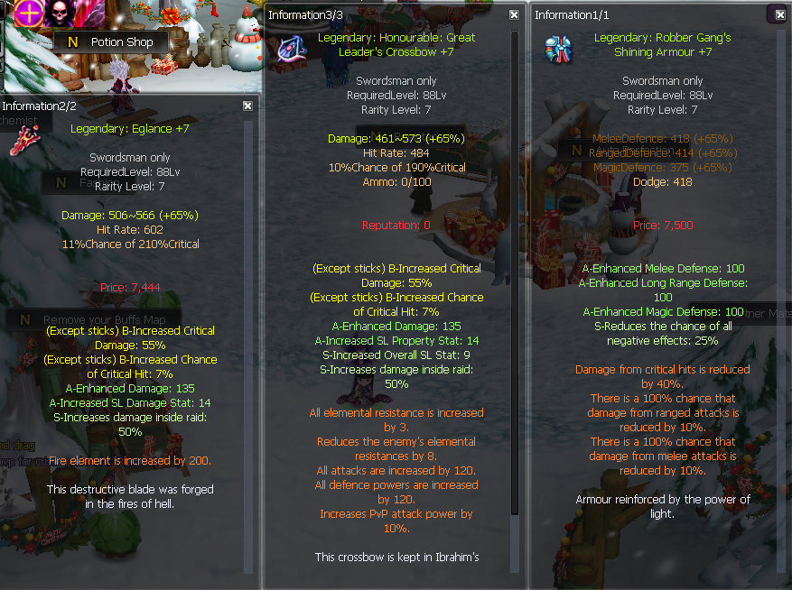
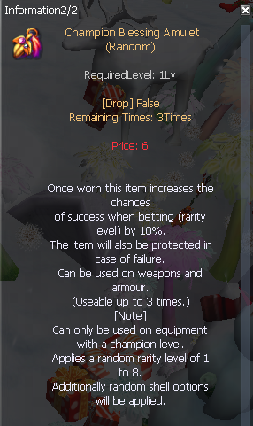
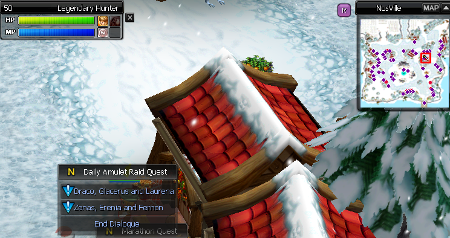
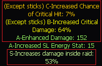
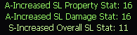
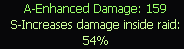
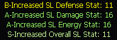
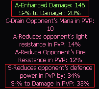
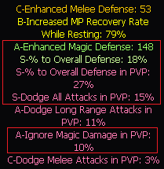
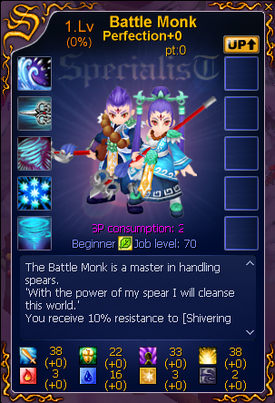

<!--  -->
<div class="d-flex justify-content-center">
    <section class="shells">
        <h1 class="shells-title-1">Shells</h1>
        <div class="upgrade-system">
            <h2 class="shells-title-2">-- What are shells? --</h2>
            <p class="shells-text">
                Shells are used to enhance your equipment with various stats. As you start your journey on NosVoid, you
                probably encountered shell options already in the Starter Equipment that is available to buy in the
                Starter Pack: PvE Equipment NPC.<br />
                There are different grades of options (from C to S). <br />The higher the grade, the bigger value the
                option
                will have. However, some of the options (like Increased Critical Damage or Increased Chance of critical
                hit in weapons and Reduces chance of receiving a critical hit in armour) can go up to grade B. <br />The
                S
                grade is reserved for exclusive options, like damage in raids, % to Damage, Overall SL Stat: x in
                weapons, or % to Overall Defense in armour.<br />
                The higher the level of the equipment, the higher the options will go. NOTE: only Champion Level
                equipment can have the shell changed/implemented.
            </p>
            

            <h2 class="shells-title-2">-- How to get shells? --</h2>
            <p class="shells-text">
                Shells can be obtained from Act 4 raids. There are two categories of shells: Weapon and Armour. There
                are also different types of shells:<br />
                ·Perfect (balanced between PvP and main options),<br />
                ·PvP (PvP options are dominant over the main options),<br />
                ·Full (main options are dominant over PvP options [PvP options could be absent in this type of
                shell]),<br />
                ·Special (containing an additional special option in the shell with a purple colour [% to Increased
                Gold,
                % to Increased Experience, etc]).<br />
                <br />
                Shells for weapons would have a purple icon on them, and the armour ones would be orange. You will have
                to identify their options with Rainbow Pearls that drop from monsters in Act 4.
            </p>
            
            

            <h2 class="shells-title-2">-- How to change options in your equipment? --</h2>
            <p class="shells-text">
                There are two ways of changing options in your equipment. One of them is just simply implementing a
                shell to your equipment (double click on the shell, then clicking on the designated weapon/armour).
                <br />The
                second option is to change the options with Champion Blessing Amulet in 'Bet' NPC. To use champion
                blessing amulet, simply double click the amulet and it will protect your equipment from being destroyed.
            </p>
            


            <h2 class="shells-title-2">-- How to obtain champion blessing amulets? --</h2>
            <p class="shells-text">
                During your journey on our server, you will encounter various NPCs with daily quests or players writing
                on speakers that they're doing 'dailies'. <br />Daily missions can be completed by finishing various
                raids on
                every Prestige and can be done once per day (quests reset at 00:00 Server Time). The first NPC to get
                the daily quests from is located in NosVille.
            </p>
            
            <p class="shells-text">
                After completing the quest, you will receive a certain amount of Random Amulet Boxes that contain 4
                Champion Blessing Amulets per box.
            </p>
            

            <div class="flex">
                <div class="m-2">
                    <h2 class="shells-title-2">-- PvE weapon options --</h2>
                    <div class="flex-2">
                        <div>
                            <b>Main Weapon:</b> <br />
                            <br />
                        </div>
                        <div>
                            <b>Secondary Weapon:</b> <br />
                            <br />
                        </div>
                    </div> 
                    <div class="flex-2">
                        <div class="">
                            <br /><b>NOTE: &nbsp;</b> for mages its not necessary to have crit options.<br />
                            
                        </div>
                    </div>

                </div>
                <div class="m-2">
                    <h2 class="shells-title-2">-- PvP weapon options --</h2>
                    <div class="flex-2">
                        <div>
                            <b>Main Weapon:</b> <br />
                            <br />
                        </div>
                        <div>
                            <b>Secondary Weapon:</b> <br />
                            <br />
                        </div>
                    </div>
                    <div class="flex-2">
                        <div class="">
                            <br/><b>NOTE: &nbsp;</b> for mages its not necessary to have crit options.<br />
                            
                        </div>
                    </div>

                </div>
            </div>

            <div class="m-2">
                <h2 class="shells-title-2">-- Armor options --</h2>
                <div class="flex-3">
                    <div>
                        <b>Range Armor:</b> <br />
                        <br />
                    </div>
                    <div>
                        <b>Melee Armor:</b> <br />
                        <br />
                    </div>
                    <div>
                        <b>Magic Armor:</b> <br />
                        <br />
                    </div>
                </div>
            </div>


            <h2 class="shells-title-2">-- How does SL works? --</h2>
            <p class="shells-text">
                As you can see above, there are certain options that probably look confusing to you if you are a new
                player.<br />
                SLs are points that add up to your SP points. You can see the SP points after right-clicking on your
                Specialist Card.
            </p>
            <br />
            <p class="shells-text">
                You can get SL points option on Main and Secondary weapons. Unlike other options, SL points are counted
                whenever you're using main or secondary weapon. That's why it's the best to have these options on the
                weapon
                you're not fighting with (because they simply take the "space" for options that are important on the
                main
                weapon, like enhanced damage etc.).<br />
                <br />
                However, the same type of SL will not add up. For example, if you have SL Damage 14 in Main Weapon and
                SL
                Damage 16 in Secondary Weapon, only the highest value will be counted, the values don't add up,
                therefore,
                the final value of SL Damage would be 16.<br />
                <br />
                Things get more complicated when it comes to Overall SL. This option increases every 4 types of SL
                values.<br />
                For example, you have SL Damage 16, SL Property 16 and SL Overall 11. <br />The values of the options
                would be
                as
                follows: SL Damage 27, SL Defence 11, SL Property 27, SL Energy 11.
            </p> <br /> <br />
        </div>
        Guide prepared by Iremia, added on wiki by Blauker

    </section>
</div>